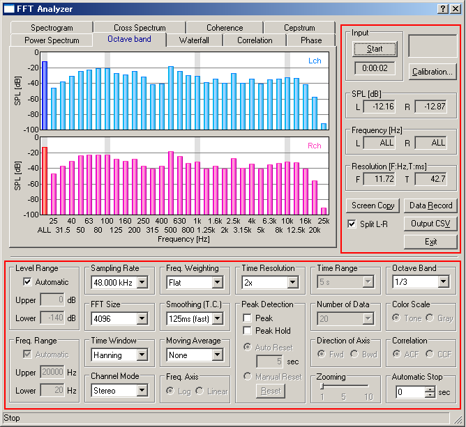

DSSF3 > RA > Reference Manual > FFT Analyzer

| Commands or options | Descriptions |
|---|---|
| Input | Measurement starts with the [Start] button. Time counter starts when the Start button is clicked. The elapsed time is displayed here during a measurement. |
| Calibration | Microphone calibration data is managed. ->Microphone calibration |
| SPL | Peak level or total level for L (= left) and R (= right) are displayed in [dB]. By a left-click on the graph, the level and the frequency at the cursor's location is displayed. By a right-click, the cursor on the graph disappears and the total level is displayed. |
| Frequency | Peak frequencies for L (= left) and R (= right) are displayed in [Hz], when the cursor appears on the graph. When the cursor disappears, it is shown as [All]. |
| Resolution | Time resolution and frequency resolution are displayed. F: frequency resolution [Hz]. T: time resolution [ms]. |
| Split L-R | If this checkbox is marked, screen is split in two and data for two channels are displayed separately. |
| Screen Copy | Click to capture the snapshot of the measurement screen. You can record any number of measurement screens during a measurement. It is convenient for comparison and printing of measurement results. |
| Data Rec. | Click to open the data logging window (only available in the octave band analyzer). Time series data of the octave band level with a specified interval can be saved as a .CSV format. ->Data record |
| Output CSV | Output the measured data to a CSV Format file. |
| Exit | Finishes the "Realtime Analyzer". |
| Commands or options | Descriptions |
|---|---|
| Level Range | Set the display range of the sound pressure level (= vertical axis). Automatic and manual setting is available. |
| Freq. Range | Set the display range of the frequency (= horizontal axis). Automatic and manual setting is available. |
| Sampling Rate | Set the sampling rate of A/D conversion. |
| FFT Size | A block size of FFT (Fast Fourier Transform). It can be chosen between 1024 and 65536. Large FFT size causes fine frequency resolution and rough time resolution. Default setting can be used in most cases. |
| Time Window | The time window is used to decrease extra frequencies. Six window functions are available. Default setting can be used in most cases. |
| Channel Mode | Mono (L+R): Measured in a monaural mode of the soundcard. Stereo: Two channels are measured (left: blue, right: pink) Left only: Only left channel is measured Right only: Only right channel is measured Differ (L-R): Difference of L-R channels is measured Note: In a monaural mode (Mono), some sound cards input only the left channel, but some cards mix both channels into one channel. To measure only one channel input, use Left only or Right only mode. |
| Freq. Weighting | Select the frequency weighting filter from Flat, A-weighting, B-weighting, and C-weighting. Normally, Flat weighting is recommended. For measuring the noise level, A-weighting is commonly used. |
| Smoothing (T.C.) | Smoothing coefficient is specified as time constant (ms or s). Standard sound level meter settings (fast: 125 ms or slow: 1s) are available. |
| Moving Average | When the time is specified (1sec to 10sec, or Infinite), the average value for this period is displayed. |
| Freq. Axis | Setting of the scale of the frequency axis. Logarithm: Rate of the frequency is constant in this scale. Linear: Difference of the frequency is constant in this scale. |
| Time Resolution | Refresh speed of the real-time display is specified. "1x" (standard), "2x" (double), "4x" (4 times), and "8x" (8 times) can be chosen. |
| Peak Detection | Peak: A peak location is indicated by the blue crossing (In the case of 2 channels, blue and red). |
| Peak Hold: Peak values are held for some seconds. Auto Reset: peak indication is refreshed with the specified period. Manual Reset: peak indication is refreshed when the "Reset" button is clicked. |
|
| Time Range | It sets up in the range for 1 to 20 seconds. |
| Direction of Axis | Direction of the time axis in "Waterfall" and "Spectrogram". When [Forward] is selected, the time shifts forward on the screen. When [Backward] is selected, the time shifts backward. |
| Octave band | Bandwidth of the octave band analysis is selected from 1/1 to 1/24. |
| Color Scale | It is chosen whether by voiceprint display, the scale corresponding to a sound pressure level is displayed in a color, or it displays by the gradation of monochrome. |
| Correlation | ACF: Auto-correlation is displayed. CCF: Cross-correlation is displayed. Moving the "Zoom" slider makes it possible to zoom the correlation function to a suitable scale on time-axis. |
| Auto Stop | If the number of seconds specified after starting measurement passes, it will stop automatically. |
| Help button : click it to use a help function. Close button : click to close the analyzer window. |
DSSF3 > RA > Reference Manual > FFT Analyzer